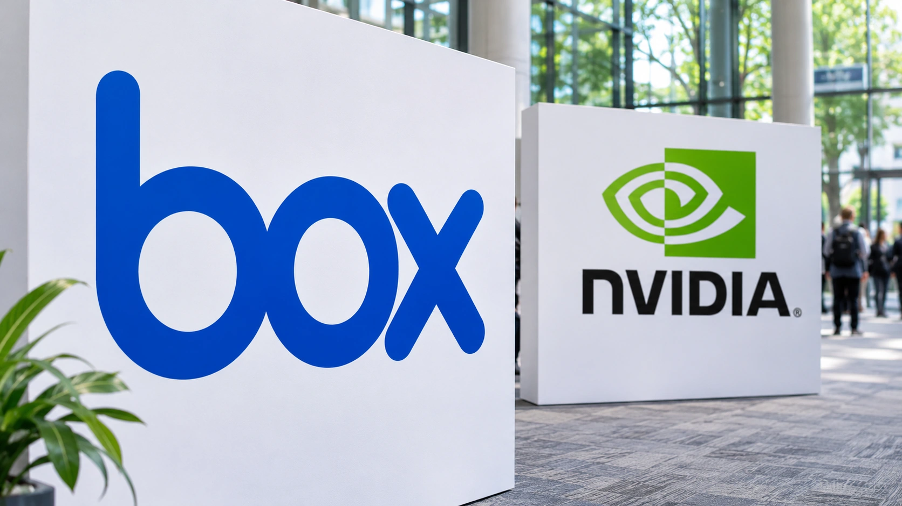

Box Turns to NVIDIA to Help AI Agents Find the Right Company Files
The content-management company plans a new retrieval engine for early 2027. Its value will depend on finding useful passages while respecting existing access permissions.

Box, the enterprise content-management company, announced an expanded NVIDIA partnership on November 5 to improve how AI agents retrieve information from business files. Its new Box Context Retrieval engine is scheduled for general availability to Enterprise Advanced customers in early 2027. The announcement addresses a practical obstacle to deploying agents: identifying the material needed for a task without giving the agent access to unrelated confidential information.
The company is also adding NVIDIA’s open-weight Nemotron models to Box AI. These are separate parts of the announcement with different availability: Nemotron models, beginning with 3 Ultra, are available now to Enterprise Advanced customers, according to Box’s release. The retrieval engine remains a planned launch. Businesses considering the new search capabilities therefore need to distinguish today’s model access from functionality still awaiting general release.
Finding a passage instead of reading every file
Box says its engine will use NVIDIA Nemotron Retriever embedding models to identify relevant information across enterprise content. Embeddings represent the meaning of material numerically, helping software match a question with related passages even when the wording differs. Box’s product description combines this semantic approach with keyword matching, which remains useful for exact identifiers such as a contract number or project code.
That combination matters because business searches often contain both kinds of request. A lawyer might need a clause about terminating an agreement without knowing the document’s exact wording. An operations employee might know a specific invoice number. A system optimized only for broad similarity can struggle with the second task; a literal keyword search can miss the first. A useful retrieval service needs to support both without burying the relevant evidence.
Returning focused passages can also reduce the amount of text sent to an answering model. Our guide to AI inference costs explains why token consumption is only one component of the cost of a completed task. Retrieval, infrastructure, retries and human checks still contribute to the bill. A shorter prompt is financially useful only if it preserves enough evidence to produce a reliable result.
Performance claims require a precise reading
Box’s announcement describes potential improvements of 20% in search accuracy measured by Recall@5, 90% lower token usage and fourfold faster question answering. These are company claims about the proposed system, rather than independently verified results for every customer. Recall@5 concerns whether relevant material appears among the first five retrieved results; it is not a measure showing that generated answers contain 20% fewer factual errors.
A customer evaluating those claims would need to compare results on its own documents and questions. Scanned forms, short emails and long legal agreements present different retrieval problems. The cost of a wrong answer also varies. Finding an outdated office policy is inconvenient; retrieving the wrong contractual obligation can create a more consequential error. Average speed and retrieval scores cannot substitute for testing the tasks a business intends to automate.
Permissions add another dimension to that evaluation. A search result can be relevant and still be inappropriate for a particular employee to see. Box says retrieval will respect access rights, and its product description says queries check the requester’s live permissions. Our analysis of enterprise AI access controls explains why authorization must remain attached to the underlying information as it moves into an AI workflow.
Retrieval and agent actions need separate controls
The expanded collaboration also connects Box’s content-governance capabilities with NVIDIA OpenShell for controlled agent execution. Retrieval determines which information an agent receives. Execution controls address what it can do afterward, including the tools it invokes and the operations it attempts. Treating those as separate questions makes it easier to identify where human approval or tighter restrictions are needed.
For example, an agent could be allowed to find the latest approved contract and summarize payment terms without being allowed to change the document or send it outside the company. A permission to read should not automatically become permission to distribute. This is an implementation issue for each deployment, rather than a guarantee that adding a retrieval product makes an entire workflow safe.
For Box, the commercial opportunity is to make its existing content platform more useful as customers adopt agents. Relevant retrieval could support demand for its higher-tier offering. The announcement itself does not establish how many customers will upgrade, how intensively they will use the service or what contribution the features will make to earnings. Product adoption and financial results will provide different evidence from a launch presentation.
The early-2027 release will give customers a clearer opportunity to assess the engine under production conditions. The most useful measures will connect retrieval quality with completed work: whether staff find the right current evidence, whether permission changes take effect correctly, and whether time saved exceeds integration and review costs. Those outcomes will determine the business value of faster search more directly than a headline reduction in tokens alone.